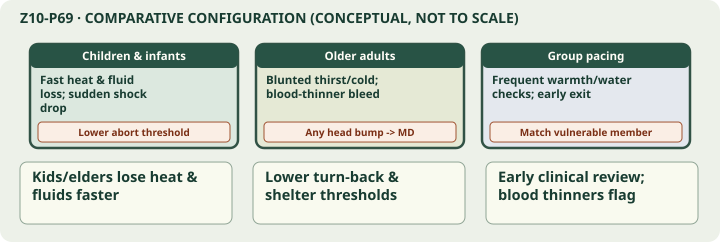

Z10-P69 · Wilderness medicine · New manuscript
Protect children and older adults against rapid exposure and shock decline
Adjust prevention, pacing, and evacuation thresholds early for vulnerable age groups with smaller physiological reserves.
When it applies · Families, youth groups, and older companions exposed to cold, heat, dehydration, altitude, or trauma.
Equipment · Extra insulating layers, shade, frequent hydration/snack reminders, written medical/allergy cards, and conservative turnaround times.

Actions
- Recognize that infants and young children lose body heat much faster (high surface-area-to-mass ratio), dehydrate rapidly during vomiting/diarrhea, and deteriorate abruptly from shock or heat illness after looking "fine" minutes earlier.[E06, E08, M17]
- Monitor older adults closely for blunted thirst/cold sensation, balance/fall hazards, blood-thinner bleeding risks (minor head bumps can cause serious delayed bleeding), and heat-wave medication sensitivity.[M11, M19, D09]
- Lower your stop-and-evacuate threshold dramatically for children and older adults—turn back early, insulate proactively before shivering starts, and contact EMS/clinicians promptly rather than watching and waiting overnight.[T02, E11, M20]
Failure recognition · Expecting a small child or frail older adult to maintain adult pacing in cold rain or high heat until sudden lethargy or collapse occurs.[E06, E08, E11]
Verify · Confirm extra warmth/water checks are scheduled frequently and any head bump on blood thinners or pediatric lethargy triggers prompt medical review.[M11, M17, M20]
Stop or change course · Unusual quietness/lethargy in a child, minimal wet diapers/urine, or ANY head injury in an older adult taking anticoagulants mandates prompt clinical evaluation.[M11, M17, T02]
Evidence and editorial notes
- D09 · FEMA / Ready.gov · Extreme Heat (current web edition)
- Section: Extreme Heat Waves, Heat Domes, and Power-Outage Cooling Plans · Conditions: Prolonged heat advisories, excessive heat warnings, and grid-strain brownouts
Support: Identify public cooling centers and air-conditioned backup locations ahead of heat waves, check twice daily on older adults/children/chronically ill neighbors, block solar gain through windows, never leave people or pets in parked vehicles, and activate 911 immediately for heat stroke.
Limitations: Electric fans alone do not prevent heat illness when indoor air temperatures climb into extreme heat ranges (above ~95°F) with high humidity. · Conflicting evidence: None; aligns with CDC-HEAT, E08, E19, and T09.
Editorial note: Anchors urban/rural heat-wave resilience and vulnerable-neighbor checks. · Specialist reviewer: Public health and emergency medicine
Primary source · checked 2026-11-24 - E06 · CDC · Preventing Hypothermia (current web edition)
- Section: Recognizing and treating hypothermia · Conditions: Cold wet exposure; signs such as confusion, slurred speech, fumbling or drowsiness
Support: Suspected hypothermia warrants prompt help and protection from further cooling. It can occur above freezing if wet or chilled.
Limitations: Early mild shivering can mask rapidly worsening judgment impairment. · Conflicting evidence: None; aligns with ARC and WMS guidance.
Editorial note: Anchors exposure-to-medical escalation thresholds. · Specialist reviewer: Wilderness medicine
Primary source · checked 2026-11-24 - E08 · CDC · About Heat and Your Health (current web edition)
- Section: Protect yourself from heat · Conditions: Outdoor activity in hot conditions
Support: Limit exertion in hot periods, take breaks in cooler places and monitor for illness.
Limitations: High humidity reduces sweat evaporation and raises heat strain at lower air temperatures. · Conflicting evidence: None; aligns with NWS-HEAT and NIOSH-H.
Editorial note: Anchors shade, pacing, and hot-weather shelter selection. · Specialist reviewer: Heat illness and emergency medicine
Primary source · checked 2026-11-24 - E11 · NPS · Hike Smart (current web edition)
- Section: Plan your hike; Stay together · Conditions: Groups on hiking routes
Support: Choose a route suited to the group's abilities and hike at a pace that keeps the group together.
Limitations: Fast hikers moving ahead at junctions is a leading driver of preventable separation. · Conflicting evidence: None; aligns with SAR prevention principles.
Editorial note: Core reference for group accountability and pacing cards. · Specialist reviewer: Group leaders and search and rescue
Primary source · checked 2026-11-24 - M11 · CDC · Symptoms of Mild TBI and Concussion (2025)
- Section: Danger signs in adults; Danger signs in children · Conditions: Head impact or suspected mild brain injury; age matters
Support: Seek emergency care for danger signs such as worsening headache, repeated vomiting, altered behavior or difficulty waking.
Limitations: Spinal precautions, older-adult blood thinners, and return to activity require separate clinical or dispatcher guidance. · Conflicting evidence: See A02 claim audit for boundaries.
Editorial note: Grounds head-trauma, concussion, and spinal-motion-restriction cards. · Specialist reviewer: Neurotrauma and wilderness EMS
Primary source · checked 2026-11-25 - M17 · NIH / MedlinePlus · Dehydration (current web edition)
- Section: Dehydration Recognition, Oral Rehydration, and Red Flags · Conditions: Heat exertion, prolonged diarrhea, vomiting, or inadequate water intake
Support: Encourage small frequent sips of safe potable water or labeled oral rehydration solution in alert patients able to swallow; evacuate urgently for confusion, inability to keep fluids down, sunken eyes, or minimal dark urine.
Limitations: Severely dehydrated or altered patients cannot safely rehydrate by mouth alone. · Conflicting evidence: None; avoids unverified homemade salt-sugar ratio guesswork when labeled packets exist.
Editorial note: Links hydration monitoring to medical evacuation triggers. · Specialist reviewer: Wilderness medicine and internal medicine
Primary source · checked 2026-11-24 - M19 · NIH / MedlinePlus · Bleeding (current web edition)
- Section: Internal Bleeding, Nosebleed, and Dressing Monitoring · Conditions: External vs suspected internal hemorrhage and severe epistaxis
Support: For routine nosebleed, sit upright leaning slightly forward and pinch the soft part of the nose continuously; escalate urgently for uncontrolled bleeding, coughing/vomiting blood, abdominal rigidity, or dizziness.
Limitations: Tilting the head backward causes blood swallowing and airway irritation. · Conflicting evidence: None; distinguishes minor nosebleed from internal-bleeding emergencies.
Editorial note: Supports bleeding sub-scenarios and recheck cadence. · Specialist reviewer: Emergency medicine and EMS
Primary source · checked 2026-11-24 - M20 · NIH / MedlinePlus · First Aid Overview (current web edition)
- Section: Lay First-Aid Scope, Kit Readiness, and Documentation · Conditions: Pre-trip kit preparation and remote patient monitoring
Support: Maintain an inspected, unexpired first-aid kit matched to your actual training, keep written patient observations (time, responsiveness, breathing, symptoms, interventions) for EMS handoff, and practice skills in certified courses.
Limitations: Carrying advanced medical instruments without clinical training adds risk rather than capability. · Conflicting evidence: None; aligns with ARC and NPS-K.
Editorial note: Anchors kit sizing, SOAP-style lay observation logs, and scope-of-practice cards. · Specialist reviewer: Wilderness EMS and clinical education
Primary source · checked 2026-11-24 - T02 · American Red Cross · First Aid Steps (current web edition)
- Section: First Aid Steps > Call 9-1-1 · Conditions: Lay emergency response to unresponsiveness, abnormal breathing or severe bleeding
Support: Activate EMS and get needed equipment. Follow dispatcher directions and act within training.
Limitations: Remote locations may delay EMS arrival, requiring sustained stabilization after activation. · Conflicting evidence: None; aligns with NPS-E.
Editorial note: Mandates early emergency activation and dispatcher adherence. · Specialist reviewer: EMS and wilderness medicine
Primary source · checked 2026-11-24
Source lineage · CDC Cold/Heat Health and NIH MedlinePlus Dehydration; new manuscript · Classification · New manuscript.